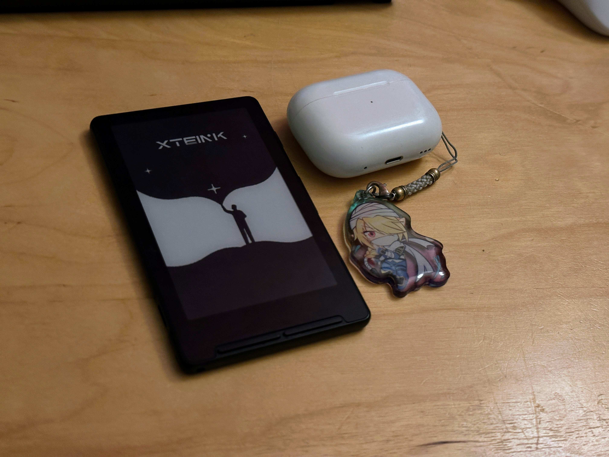
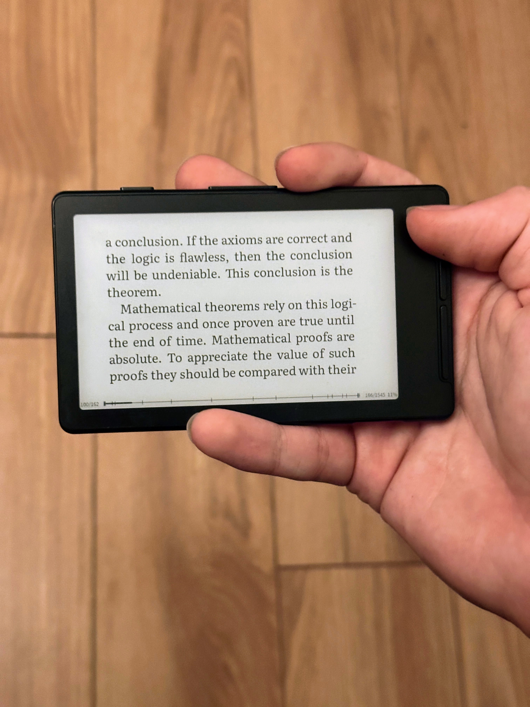
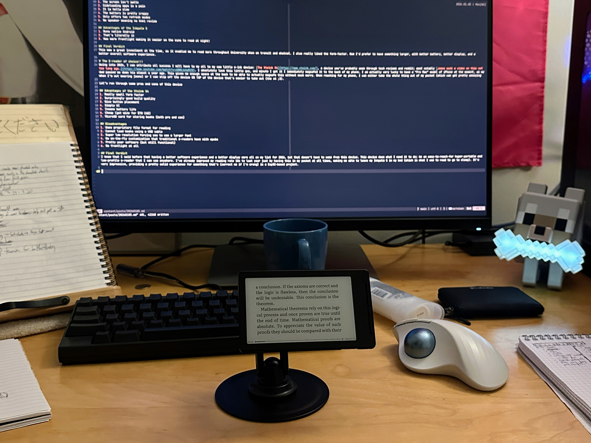

Welcome to the New Year!
Welcome to the new year everyone! I hope everyone had a wonderful holidays regardless of whether or not you celebrate Christmas or not.
Reading goal of the year
Last year my reading goal and habits were so utterly terrible that out of shame, I removed my reading goal off of my Goodreads on the last day of 2025. I know, it’s embarrassing. This year is different though, as I am now investing more of my free time into reading. I am slowly replacing the slop I consume in my life for things that I enjoy more, and that mainly involves reading (and sometimes watching Counter Strike professional matches when they matter to me). At the moment I have my reading goal set to something smaller and more manageable, just so then I can ease back into it. It’s set to 12 right now, meaning 1 book per month at LEAST, which I think is a very reasonable goal. When I am at work or on the bus, I tend to have nothing else better to do than pull out my e-reader. But what’s important is THE e-reader I’m using right now…

The E-reader of choice!!!
Going into 2026, I can attribute all success I will have to my all to my new little e-ink device: The Xteink X4, a device you’ve probably seen through tech reviews and reddit; most notably James made a video on this not too long ago.. I absolutely love this little guy, and minute I got it I immediately magsafed it to the back of my phone. I am actually very lucky to have a “Pro Max” model of iPhone at the moment, as my dad passed me down his almost a year ago. This gives me enough space at the back to be able to actually magsafe this without much worry. When reaching for my phone, I can either take the whole thing out of my pocket (which can get pretty annoying when I’m out wearing jeans) or I can slip off the device ON TOP of the device (x4 on top of iphone) that’s easier to take out.
Let’s run through some pros and cons of this device
Advantages of the Xteink X4
- Really small form factor
- Surprisingly good build quality
- Nice button placement
- Simple UI
- Insane battery life
- Cheap (got mine for $70 CAD)
- MicroSD card for storing books (both pro and con)
Disadvantages
- Uses proprietary file format for reading
- Cannot load books using a USB cable
- Super low resolution forcing you to use a larger font
- No on-the-fly customization that traditional e-readers have with epubs
- Pretty poor software (but still functional)
- No frontlight at all
- No touchscreen (entailing no annotations/highlighting)
Final Verdict
I know that I said before that having a better software experience and a better display were all on my list for 2026, but that doesn’t have to come from this device. This device does what I need it to do; be an easy-to-reach-for hyper-portable and low-profile e-reader that I can use anywhere. I’ve already improved my reading rate 10x to last year just by having this in my pocket at all times, making me able to leave my Inkpalm 5 in my bed (which is what I use to read to go to sleep). It’s very impressive, providing a pretty solid experience for something that’s (correct me if I’m wrong) is a Esp32-based project. I don’t have super large hands by any means, but at times it can feel weird to hold. But something important to remember is that this device IS NOT touch screen, meaning you aren’t going to accidentally rest your hand somewhere on it and have it start turning pages or highlight without realizing (I’m looking at you bezel-less Kindle Paperwhite).

Something I immediately found annoying was the lack of USB storage-mounting support through the normal USB-C port. In order to load any books onto the device, you have to use a MicroSD to USB adapter. There are ways to do this transfer wirelessly too, but since the book files sizes end up pretty large, I wouldn’t trust it personally. In order to make the books readable on the device WITH your own fancy formatting, you have to use this tool which will convert your normal .epub into its own proprietary version of what is essentially a .pdf. This makes what would have been a 2.4mb book into something more like a 100mb book at times. It’s little bit annoying and a bit of a hassle, especially if you want to convert books en masse, as I’ve had it error and cancel halfway through converting 10+ books). But it’s also important to remember this is this company’s FIRST e-ink device to hit the market, and as a first I’d say they’re doing a pretty decent job. It’s definitely unique, and you can be the judge of whether or not that uniqueness is for you, but I definitely love this tiny lil guy.
Conclusion
It’s only been some days into 2026, but I’ve felt infinitely better in terms of reading. Much better than last year. I did spend some of the end of this year finishing books that I wanted to get around to again, so that definitely helped kick-start the reading hobby again. But I also do believe that having this little device in my pocket has aided me a lot more than I expected. If you have any questions about this, feel free to message me on Discord. That’s really it for now. Bye!
